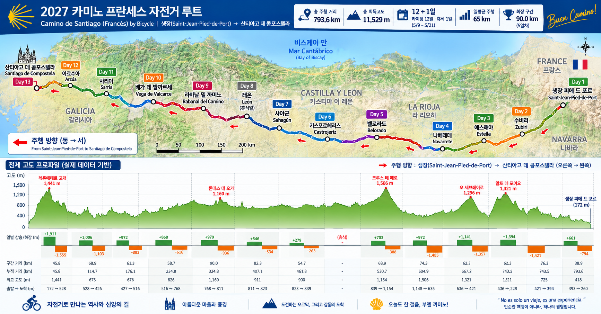
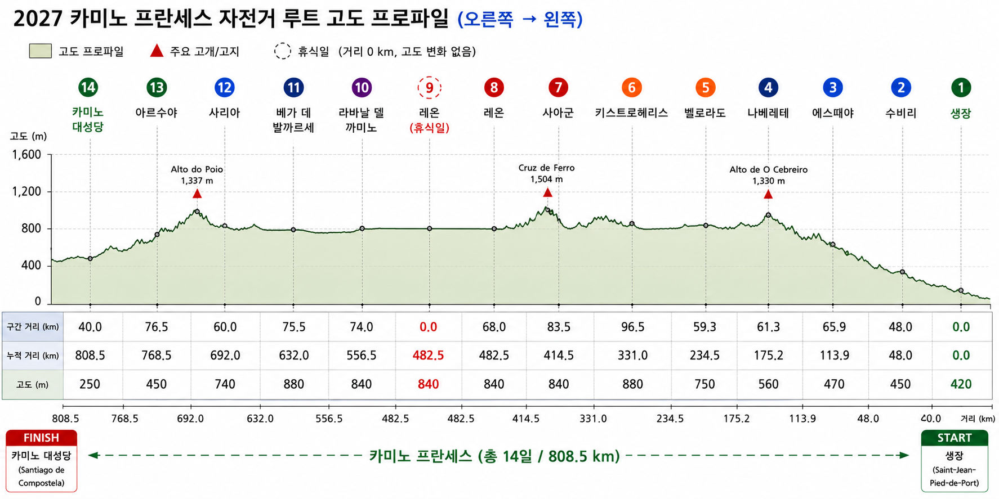

생장 → 수비리5/9 (일) · 카미노 프란세스 자전거 경로
48.0 km · 획득고도 1,350 m▲ 산악
생장Saint-Jean-Pied-de-Port
▶
오리손Orisson
▶
론세스바예스Roncesvalles
▶
수비리Zubiri
경로 순서 생장 (Saint-Jean-Pied-de-Port) → 오리손 (Orisson) → 론세스바예스 (Roncesvalles) → 수비리 (Zubiri)
Bin(미국 Newark 출발)과 Jin(한국 인천 출발)이 5월 7일 파리에서 만나 5월 8일 기차로 생장에 들어가, 12일 라이딩 + 레온 휴식 1일로 산티아고 대성당까지 완주하는 자전거 순례 일정입니다.

획득고도 기준 세 고비는 1일차 피레네 +1,350m, 10일차 크루스 데 페로 +1,050m, 11일차 오 세브레이로 +1,250m입니다. 총 누적 상승 약 8,500m.

1일차 = 5/9(일) ~ 13일차 = 5/21(금) 완주. 8일차(5/16)는 레온에서 쉬는 날입니다. 좁은 화면에서는 표를 옆으로 밀어서 보세요.
| 일차 | 날짜 | 구간 | 거리 | 획득고도 | 누적 km |
|---|---|---|---|---|---|
| 1 | 5/9일 | 생장 (Saint-Jean-Pied-de-Port) → 수비리 (Zubiri) | 48.0 km | +1,350 m | 48.0 |
| 2 | 5/10월 | 수비리 (Zubiri) → 에스떼야 (Estella) | 65.9 km | +800 m | 113.9 |
| 3 | 5/11화 | 에스떼야 (Estella) → 나베레테 (Navarrete) | 61.3 km | +700 m | 175.2 |
| 4 | 5/12수 | 나베레테 (Navarrete) → 벨로라도 (Belorado) | 59.3 km | +850 m | 234.5 |
| 5 | 5/13목 | 벨로라도 (Belorado) → 키스트로헤리스 (Castrojeriz) | 96.5 km | +350 m | 331.0 |
| 6 | 5/14금 | 키스트로헤리스 (Castrojeriz) → 사아군 (Sahagún) | 83.5 km | +450 m | 414.5 |
| 7 | 5/15토 | 사아군 (Sahagún) → 레온 (León) | 68.0 km | +250 m | 482.5 |
| 8 | 5/16일 | 🛌 레온 (León) 휴식일 — 자전거 주행 없음 | 0 km | — | 482.5 |
| 9 | 5/17월 | 레온 (León) → 라바날 델 까미노 (Rabanal del Camino) | 74.0 km | +250 m | 556.5 |
| 10 | 5/18화 | 라바날 델 까미노 (Rabanal del Camino) → 베가 데 발까르세 (Vega de Valcarce) | 75.5 km | +1,050 m | 632.0 |
| 11 | 5/19수 | 베가 데 발까르세 (Vega de Valcarce) → 사리아 (Sarria) | 60.0 km | +1,250 m | 692.0 |
| 12 | 5/20목 | 사리아 (Sarria) → 아르수아 (Arzúa) | 76.5 km | +900 m | 768.5 |
| 13 | 5/21금 | 아르수아 (Arzúa) → 산티아고 대성당 (Santiago de Compostela) | 40.0 km | +300 m | 808.5 |
각 카드의 QR 코드를 휴대폰 카메라로 스캔하거나 버튼을 누르면 해당 구간의 구글 지도 자전거 길찾기가 바로 열립니다. ※ 구글 자전거 경로는 일부 비포장 카미노 구간을 인근 도로로 우회할 수 있습니다.
7일 동안 482.5km를 달린 뒤 갖는 온전한 하루의 쉼입니다. 다리를 쉬게 하고, 남은 6일(326km)을 준비하세요.
파리 몽파르나스에서 TGV로 Bayonne까지, TER 완행으로 환승. 이 일정은 10:05 출발편 기준입니다 (SJPP 15:26 도착 — 자전거 수령 여유 충분).
| 몽파르나스 출발 | Bayonne 도착 | Bayonne 출발 (TER) | SJPP 도착 | 총 소요 |
|---|---|---|---|---|
| 07:54 | 12:08 | 12:36 | 13:41 | 5시간 47분 |
| 10:05✓ 선택 | 14:05 | 14:25 | 15:26 | 5시간 21분 |
| 12:06 OUIGO | 16:11 | 17:14 | 18:18 | 6시간 12분 |
| 13:59 | 18:08 | 18:37 | 19:43 | 5시간 44분 |
☀ 일출–일몰(도착일 기준 근사치, CEST) · 🌡 5월 평년 최저/최고 기온. 레온은 휴식일 포함 같은 숙소 2박을 권장합니다. 자전거 순례자는 사설 알베르게·오스탈 예약이 안전합니다.
렌탈 자전거에 패니어를 달아 싣는 개인 짐 목록입니다. Bin 총 5,417g (약 5.4kg) — 자전거 순례 짐으로 이상적인 무게입니다. Jin의 목록은 추후 채워 넣을 예정입니다.